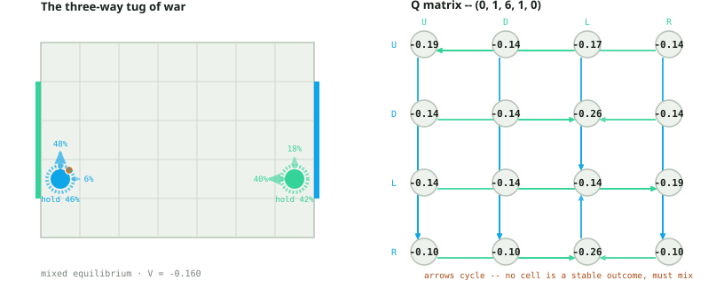
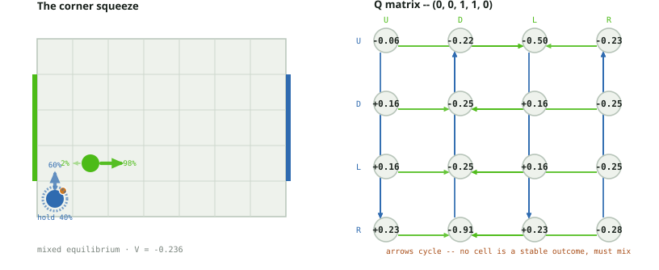
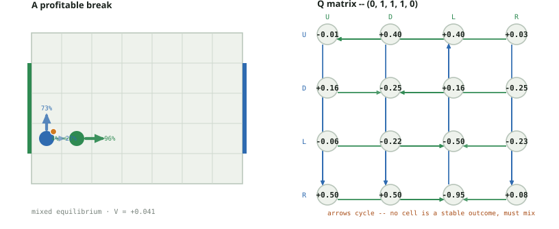
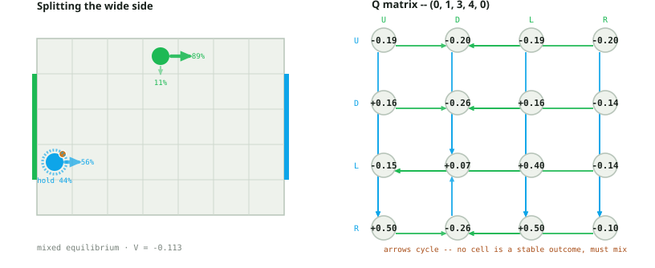
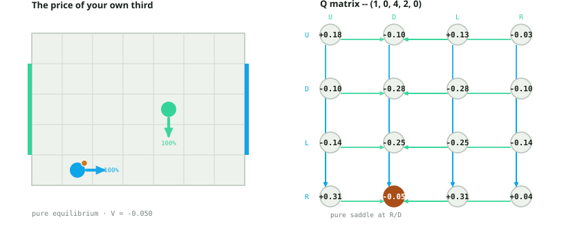
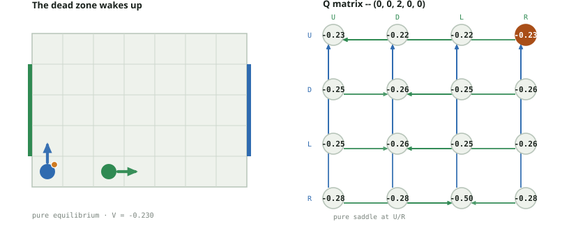
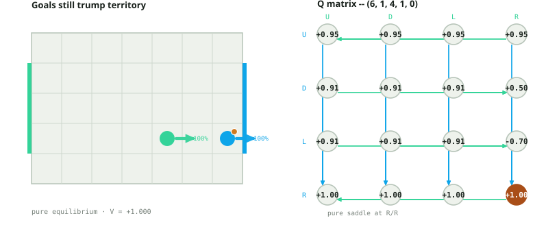

Soccer Markov Nash · Territory-reward board
7 by 5 board; goal rows 1, 2, 3; simultaneous U/D/L/R; the same deterministic
carrier-wins-contests resolution as the A10 board -- no randomness in movement or
contests at all. What changes is scoring="territory": the first goal
still ends the game outright, exactly as under plain "win" scoring, but
every non-terminal transition additionally pays a small dense per-step reward based
on which third of the board the ball carrier is standing in afterward
(territory_reward=0.05): +0.05 for player 0 / -0.05 for player 1 if the
carrier is in the rightmost third, the reverse in the leftmost third, nothing in the
middle third. Player 0 attacks the right goal, player 1 the left, so this rewards
controlling the ball in your attacking third every single turn, on top of the
underlying win/lose game.
Selection rule: where a pure saddle exists (maximin equals minimax), the same convention as a10_cases.html applies -- preserve the best worst-case payoff, then maximize mean payoff among exact security ties, with no uniform tie mix substituted for the solver's policy. Where no pure saddle exists, the solver instead returns the linear program's own mixed Nash equilibrium probabilities directly, as computed, not rounded toward any single action.
Headline finding: 69 of 2380 states (~2.9%) genuinely mix -- versus exactly 0 of 2380 on the A10 board. A10's headline result is that its stage game is always pure, because nothing there ever gives the two players opposing reasons to want the same square at the same time in a way that a single action can't resolve. The territory reward changes that: it is a second, independent zero-sum tug-of-war over ball position layered on top of the win/lose game, active every single turn regardless of who is carrying. In most states the two objectives point the same direction and a pure equilibrium survives -- but in 69 states the position-control incentive and the win/lose incentive genuinely conflict, so the row and column players' pure security levels (maximin and minimax) disagree by a real, positive gap, and no single action is optimal against a rational opponent. That gap is exactly what a mixed equilibrium is: real, LP-computed randomization, not a uniform average glossed over a tie. See positions.pdf for the sibling source of mixed play on this project's random-move-order board -- the two are unrelated mechanisms that happen to produce the same phenomenon.
Cases 1-4 below are the verified mixed-equilibrium states, each traced back to a
real maximin/minimax gap and an LP support that often does not even match the naive
pure-tie set. Case 5 isolates the territory-reward mechanic in a single Q-matrix
cell whose continuation value happens to be exactly 0, so the cell equals the raw
one-step reward. Cases 6 and 7 cross-solve the identical board and state under plain
scoring="win" to show precisely what the territory reward adds --
and, in case 7, what it deliberately does not touch. These are discounted stationary
values with gamma 0.9, not an undiscounted turn-by-turn assignment.
Interactive explorer · Audit and reproduction details
State (0, 1, 6, 1, 0) · player 0 carries the ball · V = -0.160151 · mixed equilibrium
Pure security ties (not the mixed support itself): P0 U · P1 L
Player 0 carries the ball at (0,1), deep in its own defending third (bx=0 < width/3≈2.33); player 1's defender sits at (6,1), all the way at the opposite wall. Every one of the 16 joint actions still lands the ball inside that same leftmost third next turn (verified below: every cell carries the identical -0.05/+0.05 step reward), so none of the Q matrix's variation comes from this turn's reward -- all of it comes from the 16 different continuation values. That is exactly what produces a real gap between the two pure security levels: row-maximin is -0.191873 (unique at U) but col-minimax is -0.135500 (unique at L), a genuine 0.056373 gap -- unlike every state in a10_cases.py, where that gap is always exactly zero. With no pure saddle, the LP instead finds row ≈ U 48% / L 46% / R 6% and col ≈ U 18% / L 40% / R 42%, with V=-0.160151 sitting strictly between the two pure bounds, as von Neumann's minimax theorem requires. The equilibrium's actual support does not even match the naive pure-tie set (U alone for player 0, L alone for player 1) -- once there is no saddle, that tie set stops being a guide to the joint mixed solution.
Open this position in the interactive explorer →
| P0 / P1 | U | D | L | R |
|---|---|---|---|---|
| U | -0.191873 | -0.135500 | -0.171950 | -0.135500 |
| D | -0.135500 | -0.135500 | -0.256784 | -0.135500 |
| L | -0.135500 | -0.135500 | -0.135500 | -0.194136 |
| R | -0.095000 | -0.095000 | -0.256784 | -0.095000 |
| P0 / P1 | U | D | L | R |
|---|---|---|---|---|
| U | (0, 2, 6, 2, 0) (-0.05) | (0, 2, 6, 0, 0) (-0.05) | (0, 2, 5, 1, 0) (-0.05) | (0, 2, 6, 1, 0) (-0.05) |
| D | (0, 0, 6, 2, 0) (-0.05) | (0, 0, 6, 0, 0) (-0.05) | (0, 0, 5, 1, 0) (-0.05) | (0, 0, 6, 1, 0) (-0.05) |
| L | (0, 1, 6, 2, 0) (-0.05) | (0, 1, 6, 0, 0) (-0.05) | (0, 1, 5, 1, 0) (-0.05) | (0, 1, 6, 1, 0) (-0.05) |
| R | (1, 1, 6, 2, 0) (-0.05) | (1, 1, 6, 0, 0) (-0.05) | (1, 1, 5, 1, 0) (-0.05) | (1, 1, 6, 1, 0) (-0.05) |
State (0, 0, 1, 1, 0) · player 0 carries the ball · V = -0.236267 · mixed equilibrium
Pure security ties (not the mixed support itself): P0 D/L · P1 R
Player 0 carries the ball pinned in the exact corner (0,0); player 1's defender is one diagonal step away at (1,1) -- close combat, and again deep in player 0's own third the entire turn (every one of the 16 successors pays the same -0.05/+0.05 step reward, verified below). The pure security levels disagree -- row-maximin -0.246038, tied between D and L; col-minimax -0.229760, unique at R -- a 0.016278 gap, again ruling out a pure saddle. What makes this one worth a second look: the LP's real mixed support (U 60% / L 40%) does not match the pure-tie set at all -- D never appears in the actual equilibrium, and U carries the majority weight despite never being among the maximin ties. Player 1 mirrors this: minimax is unique at R, yet the LP mostly plays R (97.6%) with a small 2.4% on L, not 100% R.
Open this position in the interactive explorer →
| P0 / P1 | U | D | L | R |
|---|---|---|---|---|
| U | -0.061671 | -0.217820 | -0.500000 | -0.229760 |
| D | 0.159745 | -0.246038 | 0.159745 | -0.246038 |
| L | 0.159745 | -0.246038 | 0.159745 | -0.246038 |
| R | 0.233050 | -0.905000 | 0.233050 | -0.281352 |
| P0 / P1 | U | D | L | R |
|---|---|---|---|---|
| U | (0, 1, 1, 2, 0) (-0.05) | (0, 1, 1, 0, 0) (-0.05) | (0, 1, 1, 1, 1) (-0.05) | (0, 1, 2, 1, 0) (-0.05) |
| D | (0, 0, 1, 2, 0) (-0.05) | (0, 0, 1, 0, 0) (-0.05) | (0, 0, 0, 1, 0) (-0.05) | (0, 0, 2, 1, 0) (-0.05) |
| L | (0, 0, 1, 2, 0) (-0.05) | (0, 0, 1, 0, 0) (-0.05) | (0, 0, 0, 1, 0) (-0.05) | (0, 0, 2, 1, 0) (-0.05) |
| R | (1, 0, 1, 2, 0) (-0.05) | (1, 0, 1, 1, 1) (-0.05) | (1, 0, 0, 1, 0) (-0.05) | (1, 0, 2, 1, 0) (-0.05) |
State (0, 1, 1, 1, 0) · player 0 carries the ball · V = +0.041147 · mixed equilibrium
Pure security ties (not the mixed support itself): P0 U · P1 R
Player 0 again starts carrying the ball in its own third at (0,1), but here it has a real breakaway option: R threatens the middle of the board, and if it gets there (R/U and R/D both reach a continuation value of +0.609745) the position is very good for player 0. That threat is why the equilibrium value is positive, V=+0.041147, even though the ball starts the turn in player 0's own third and this turn's step reward is the same -0.05/+0.05 on every one of the 16 cells. Row-maximin (-0.012968, unique at U) and col-minimax (+0.084063, unique at R) leave a 0.097031 gap, so player 0 mixes U 73.5% / R 26.5% rather than only playing the safe U, and player 1 mostly plays R (95.8%) to shut the breakaway down, with a small 4.2% on L to keep player 0 honest.
Open this position in the interactive explorer →
| P0 / P1 | U | D | L | R |
|---|---|---|---|---|
| U | -0.012968 | 0.398893 | 0.398893 | 0.025657 |
| D | 0.159745 | -0.246038 | 0.159745 | -0.246038 |
| L | -0.061671 | -0.217820 | -0.500000 | -0.229760 |
| R | 0.498771 | 0.498771 | -0.950000 | 0.084063 |
| P0 / P1 | U | D | L | R |
|---|---|---|---|---|
| U | (0, 2, 1, 2, 0) (-0.05) | (0, 2, 1, 0, 0) (-0.05) | (0, 2, 0, 1, 0) (-0.05) | (0, 2, 2, 1, 0) (-0.05) |
| D | (0, 0, 1, 2, 0) (-0.05) | (0, 0, 1, 0, 0) (-0.05) | (0, 0, 0, 1, 0) (-0.05) | (0, 0, 2, 1, 0) (-0.05) |
| L | (0, 1, 1, 2, 0) (-0.05) | (0, 1, 1, 0, 0) (-0.05) | (0, 1, 1, 1, 1) (-0.05) | (0, 1, 2, 1, 0) (-0.05) |
| R | (1, 1, 1, 2, 0) (-0.05) | (1, 1, 1, 0, 0) (-0.05) | (1, 1, 0, 1, 1) (-0.05) | (1, 1, 2, 1, 0) (-0.05) |
State (0, 1, 3, 4, 0) · player 0 carries the ball · V = -0.112921 · mixed equilibrium
Pure security ties (not the mixed support itself): P0 L · P1 R
A long diagonal, not a close-quarters stand-off: player 0 carries the ball at (0,1) near its own goal, while player 1's defender is clear across the board at (3,4), the far top corner. bx again never leaves the leftmost third across all 16 successors, so every cell again pays the identical -0.05/+0.05 step reward, and the Q matrix's shape comes entirely from continuation values, which range from -0.256784 up to +0.609745 depending on whether player 0's move threatens the open right side of the board. Row-maximin is -0.151629 (unique at L); col-minimax is -0.095000 (unique at R); a 0.056629 gap. The equilibrium mixes row onto L 44.2% / R 55.8% -- not the maximin-unique L alone -- and column onto D 11.1% / R 88.9% -- not the minimax-unique R alone. V=-0.112921 lands, as it must, strictly between the two pure bounds.
Open this position in the interactive explorer →
| P0 / P1 | U | D | L | R |
|---|---|---|---|---|
| U | -0.186466 | -0.199733 | -0.186466 | -0.195404 |
| D | 0.159745 | -0.256784 | 0.159745 | -0.135500 |
| L | -0.151629 | 0.068327 | 0.398893 | -0.135500 |
| R | 0.498771 | -0.256784 | 0.498771 | -0.095000 |
| P0 / P1 | U | D | L | R |
|---|---|---|---|---|
| U | (0, 2, 3, 4, 0) (-0.05) | (0, 2, 3, 3, 0) (-0.05) | (0, 2, 2, 4, 0) (-0.05) | (0, 2, 4, 4, 0) (-0.05) |
| D | (0, 0, 3, 4, 0) (-0.05) | (0, 0, 3, 3, 0) (-0.05) | (0, 0, 2, 4, 0) (-0.05) | (0, 0, 4, 4, 0) (-0.05) |
| L | (0, 1, 3, 4, 0) (-0.05) | (0, 1, 3, 3, 0) (-0.05) | (0, 1, 2, 4, 0) (-0.05) | (0, 1, 4, 4, 0) (-0.05) |
| R | (1, 1, 3, 4, 0) (-0.05) | (1, 1, 3, 3, 0) (-0.05) | (1, 1, 2, 4, 0) (-0.05) | (1, 1, 4, 4, 0) (-0.05) |
State (1, 0, 4, 2, 0) · player 0 carries the ball · V = -0.050000 · pure equilibrium
Pure security ties (not the mixed support itself): P0 R · P1 D
This is the territory-reward mechanic isolated, with nothing compounded on top of it. The equilibrium here is pure: R is player 0's unique maximin (-0.05) and D is player 1's unique minimax (-0.05) -- a genuine pure saddle, gap exactly 0. Player 0's equilibrium move R takes the carrier from x=1 to x=2, still inside the leftmost third (2 < 7/3≈2.333), so it pays the -0.05 own-third penalty (verified: (R, D) -> (2, 0, 4, 1, 0), reward -0.05). That successor state happens to be worth exactly 0.0 in the exact solve -- no advantage either way from there -- so the discounted continuation term 0.9×0.0 vanishes completely, and the entire state value is the single step's reward, untouched by any downstream compounding: V=-0.05, exactly. That is the rule's direct fingerprint on the numbers, not something inferred from a downstream difference.
Open this position in the interactive explorer →
| P0 / P1 | U | D | L | R |
|---|---|---|---|---|
| U | 0.184604 | -0.095000 | 0.131474 | -0.026421 |
| D | -0.095000 | -0.281105 | -0.281105 | -0.095000 |
| L | -0.135500 | -0.253277 | -0.246038 | -0.135500 |
| R | 0.314500 | -0.050000 | 0.314500 | 0.044073 |
| P0 / P1 | U | D | L | R |
|---|---|---|---|---|
| U | (1, 1, 4, 3, 0) (-0.05) | (1, 1, 4, 1, 0) (-0.05) | (1, 1, 3, 2, 0) (-0.05) | (1, 1, 5, 2, 0) (-0.05) |
| D | (1, 0, 4, 3, 0) (-0.05) | (1, 0, 4, 1, 0) (-0.05) | (1, 0, 3, 2, 0) (-0.05) | (1, 0, 5, 2, 0) (-0.05) |
| L | (0, 0, 4, 3, 0) (-0.05) | (0, 0, 4, 1, 0) (-0.05) | (0, 0, 3, 2, 0) (-0.05) | (0, 0, 5, 2, 0) (-0.05) |
| R | (2, 0, 4, 3, 0) (-0.05) | (2, 0, 4, 1, 0) (-0.05) | (2, 0, 3, 2, 0) (-0.05) | (2, 0, 5, 2, 0) (-0.05) |
State (0, 0, 2, 0, 0) · player 0 carries the ball · V = -0.229760 · pure equilibrium
Pure security ties (not the mixed support itself): P0 U · P1 U/R
This exact state is a10_cases.py's own case 8, "the dead zone": the single most common shape on the whole board under plain scoring='win' (514 of 2380 states) and worth exactly 0.0 there -- both players genuinely indifferent among all four actions in every one of the 16 Q-matrix cells. Cross-solved here with scoring='territory' instead (nothing else about the board changed), the identical state is worth -0.229760, not 0. With the ball starting at (0,0), deep in player 0's own third, and staying there in all 16 of this turn's successors (bx never reaches 2.333, so every cell pays the identical -0.05/+0.05 step reward, verified below), player 0 now pays a steady toll just for standing on its own side of the pitch. It is still a pure equilibrium: maximin and minimax agree exactly at -0.229760, unique at U for player 0 and tied between U and R for player 1, resolved to R by the same tie-break convention a10_cases.py documents (preserve the security value, then maximize mean payoff among exact ties). The territory reward has quietly broken the tie between "doing nothing" and "costing you something" without changing which actions are chosen.
Open this position in the interactive explorer →
| P0 / P1 | U | D | L | R |
|---|---|---|---|---|
| U | -0.229760 | -0.217820 | -0.217820 | -0.229760 |
| D | -0.246038 | -0.256784 | -0.246038 | -0.256784 |
| L | -0.246038 | -0.256784 | -0.246038 | -0.256784 |
| R | -0.281352 | -0.281105 | -0.500000 | -0.281105 |
| P0 / P1 | U | D | L | R |
|---|---|---|---|---|
| U | (0, 1, 2, 1, 0) (-0.05) | (0, 1, 2, 0, 0) (-0.05) | (0, 1, 1, 0, 0) (-0.05) | (0, 1, 3, 0, 0) (-0.05) |
| D | (0, 0, 2, 1, 0) (-0.05) | (0, 0, 2, 0, 0) (-0.05) | (0, 0, 1, 0, 0) (-0.05) | (0, 0, 3, 0, 0) (-0.05) |
| L | (0, 0, 2, 1, 0) (-0.05) | (0, 0, 2, 0, 0) (-0.05) | (0, 0, 1, 0, 0) (-0.05) | (0, 0, 3, 0, 0) (-0.05) |
| R | (1, 0, 2, 1, 0) (-0.05) | (1, 0, 2, 0, 0) (-0.05) | (1, 0, 2, 0, 1) (-0.05) | (1, 0, 3, 0, 0) (-0.05) |
State (6, 1, 4, 1, 0) · player 0 carries the ball · V = +1.000000 · pure equilibrium
Pure security ties (not the mixed support itself): P0 R · P1 U/D/L/R
This is a10_cases.py's own case 4, "the open goal," resolved here under scoring='territory' instead. Player 0 sits at (6,1), the right wall, in a goal row, already carrying the ball; player 1 defends at (4,1). game.transitions() confirms R still scores unconditionally against every one of player 1's four replies (R/U, R/D, R/L, R/R all return the terminal state (-1,-1,-1,-1,0) with reward (1,-1)) -- exactly as under plain win scoring, because transitions() only applies the per-step territory reward when the successor is non-terminal. Cross-solved on the identical board with scoring='win': V=1.0 there too, bit for bit identical to the territory-scoring value below. The dense per-step reward this document is otherwise about is never paid on the scoring transition itself -- carrying the ball into your own attacking third and finishing forfeits nothing. R is the unique maximin (1.0); every one of player 1's four columns tie at the same minimax (1.0), because there is nothing player 1 can do about it.
Open this position in the interactive explorer →
| P0 / P1 | U | D | L | R |
|---|---|---|---|---|
| U | 0.950000 | 0.950000 | 0.950000 | 0.950000 |
| D | 0.905000 | 0.905000 | 0.905000 | 0.500000 |
| L | 0.905000 | 0.905000 | 0.905000 | -0.700245 |
| R | 1.000000 | 1.000000 | 1.000000 | 1.000000 |
| P0 / P1 | U | D | L | R |
|---|---|---|---|---|
| U | (6, 2, 4, 2, 0) (+0.05) | (6, 2, 4, 0, 0) (+0.05) | (6, 2, 3, 1, 0) (+0.05) | (6, 2, 5, 1, 0) (+0.05) |
| D | (6, 0, 4, 2, 0) (+0.05) | (6, 0, 4, 0, 0) (+0.05) | (6, 0, 3, 1, 0) (+0.05) | (6, 0, 5, 1, 0) (+0.05) |
| L | (5, 1, 4, 2, 0) (+0.05) | (5, 1, 4, 0, 0) (+0.05) | (5, 1, 3, 1, 0) (+0.05) | (5, 1, 4, 1, 1) |
| R | (-1, -1, -1, -1, 0) (+1.00) | (-1, -1, -1, -1, 0) (+1.00) | (-1, -1, -1, -1, 0) (+1.00) | (-1, -1, -1, -1, 0) (+1.00) |